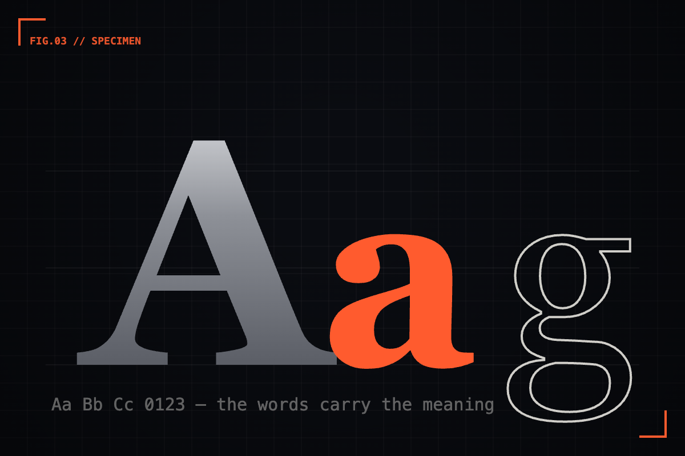

Type is the interface.
Before color, before layout, before a single icon — the words and the way they're set carry most of the meaning.


Strip a product interface down to nothing. Take away the color, the icons, the shadows and rounded corners. What's left? Words — and the way those words are arranged on the screen. That's the interface. Everything else is decoration on top of it.
We talk about design as though typography is one ingredient among many, sitting alongside color and spacing and imagery. But open almost any screen you use and measure how much of it is type. The navigation, the labels, the headings, the body, the buttons, the fine print. It's nearly all words. If most of what a user reads is text, then most of what they experience is typography — whether we designed it on purpose or not.
01 / The first decisionHierarchy before ornament
Before a single color is chosen, type has already done the heavy lifting. Size, weight, and spacing tell the eye what matters most, what matters next, and what can wait. That's hierarchy, and it's the most important thing a screen communicates. Get it right in plain black and white and the design already works. Get it wrong and no amount of color will save it.
I've started treating the greyscale wireframe as a typographic test. If the page reads cleanly with nothing but two type sizes and a couple of weights, the bones are good. If it only makes sense once color and boxes are added, the hierarchy was never really there — it was being faked by decoration.
Good typography is invisible. You don't notice it; you just understand the page. Bad typography is invisible too — until you realise you've read the same line three times.
02 / The quiet variablesWhere the craft actually lives
The interesting work in typography isn't picking a typeface. It's the small, unglamorous decisions that almost nobody notices and everybody feels:
- Line length. Too wide and the eye loses its place returning to the next line. Around 45–75 characters is the comfortable range, and it's worth defending.
- Line height. Dense text suffocates; airy text drifts apart. The right rhythm makes a paragraph feel effortless to read.
- Contrast in scale. A timid jump between heading and body reads as mush. A confident one creates instant structure.
- Alignment and measure. Where a line starts and ends does more for order than any border ever will.
None of these show up in a moodboard. All of them decide whether the thing feels considered or careless.
Design a screen in a single typeface, one color, two sizes, two weights. If it still communicates clearly, you've found the real structure. Everything you add after that is enhancement — not rescue.
03 / Words are part of itThe designer's other typeface
There's a second half to this that designers love to outsource: the words themselves. A button that says "Submit" and a button that says "Send invite" are set in the same type, but they are not the same design. The label is as much a design decision as the corner radius — arguably more, because the user reads it and acts on it.
When I design a flow now, I write the interface before I style it. Every label, every heading, every empty-state line, in plain text. If the product makes sense as a script, it will make sense as a screen. If the words are vague, no visual polish will fix the confusion underneath.
04 / The takeawaySet the words, set the tone
Typography is not the layer you add at the end to make things look finished. It's the layer underneath everything — the structure the user actually reads, the voice they actually hear. Treat it as the foundation, and the rest of the design has something solid to stand on.
So spend the extra hour on the type scale. Sweat the line length. Rewrite the label. It's not the polish on the interface. It is the interface.